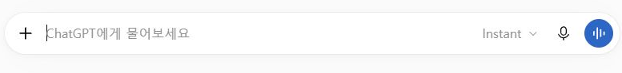

Bravo AI Life 기본 사용법 · 1차시로 돌아가기

LESSON 01 / 기본 조작
첫 질문부터 나만의 설정까지
아래에서 궁금한 기능을 열거나, 첫 화면부터 ‘다음’을 눌러 차례대로 따라오세요.
- 새 대화에서 첫 질문 보내기
입력창에서 글, 받아쓰기, 음성 대화를 구분해 봅니다. - PDF를 한 번 첨부하고 이어 묻기
파일 선택, 첨부 확인, 다음 질문을 순서대로 확인합니다. - 글로 설명한 요리를 그림으로 받기
재료와 구도를 정해 그림을 만들고 결과에 무엇이 보이는지 확인합니다. - 산책 준비용 프로젝트 만들기
하나의 주제에 쓸 대화와 지침을 한곳에 모읍니다. - 프로젝트 지침이 답변에 반영됐는지 확인하기
폴더 안에서만 쓸 규칙을 저장하고 실제 답을 점검합니다. - 모든 대화에 쓸 개인 지침과 메모리 구분하기
답변 방식으로 쓸 규칙과 이전 대화에서 참고할 정보를 구분합니다. - 언어·화면·음성·키보드 설정 살펴보기
수업 화면이 다르게 보이거나 조작이 어려울 때 어디에서 확인할지 익힙니다. - 알림·데이터 관리·보안 설정 읽기
설정의 용도를 구분하고 수업용 계정에서도 필요한 항목만 확인합니다.